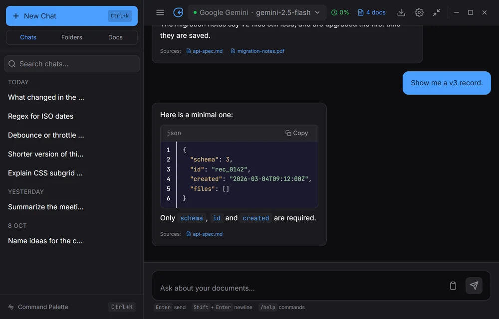
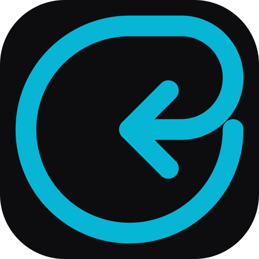

AI chat that opens at your cursor.
Press Alt Space in any app. Ask your question. Press Esc and carry on.
Windows and Linux. Free for personal use.
Small questions break focus.
In a browser
- Open the browser
- Find the tab
- Type the prompt
- Wait
- Find your place again
With OmniRecall
- Alt Space
- Ask
- Esc
It opens where you are working.
The window appears under your cursor, takes your question, and hides when you press Esc or click away.
Ask about your own files.
Add PDFs, notes or code. Each answer lists the documents it used.
Use the model you want.
Bring your own API key, or run Ollama on your machine with no key. Compare up to four models side by side.
Your chats stay on your computer.
-
Stored locally
Chat history and the document index live on your machine.
-
Keys in the system store
API keys go in your operating system’s credential store.
-
Fully local with Ollama
Run Ollama with no API keys and nothing leaves your machine.
More room when you want it.
Expand to the Dashboard for history, folders, search, branches and export. Six themes.


Get OmniRecall.
Free for personal and educational use. Installers for Windows and Linux; macOS is planned.